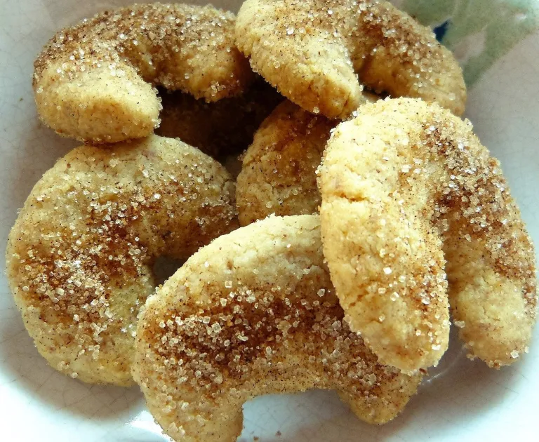
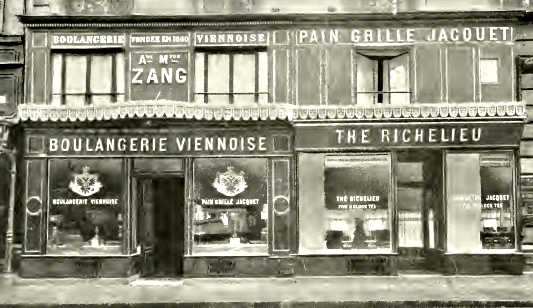
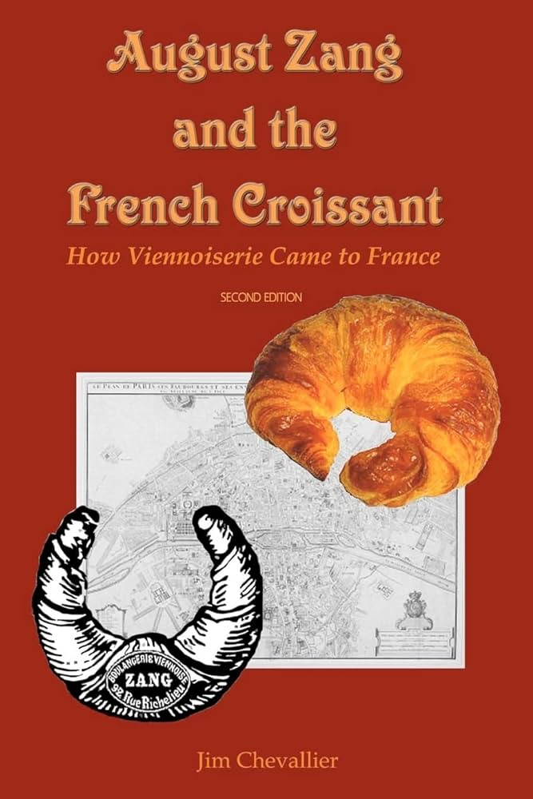
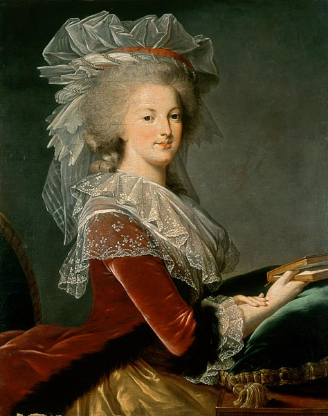
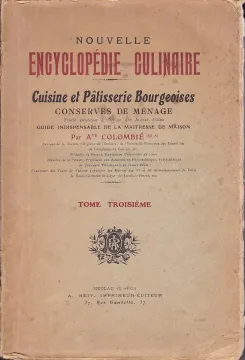
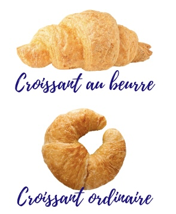
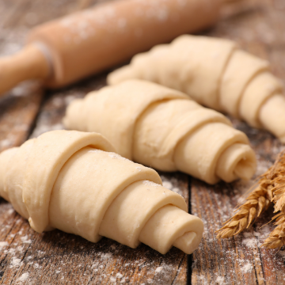
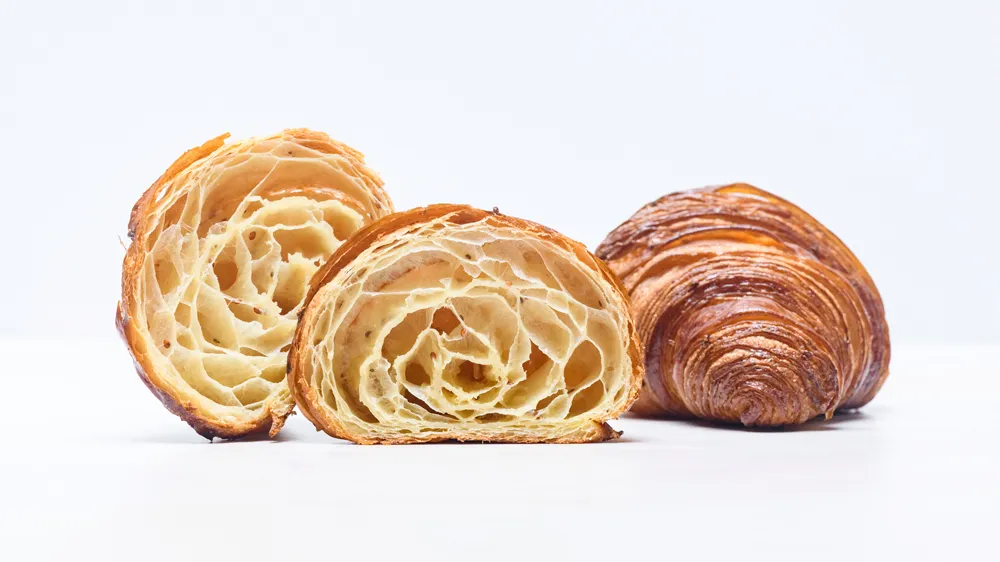
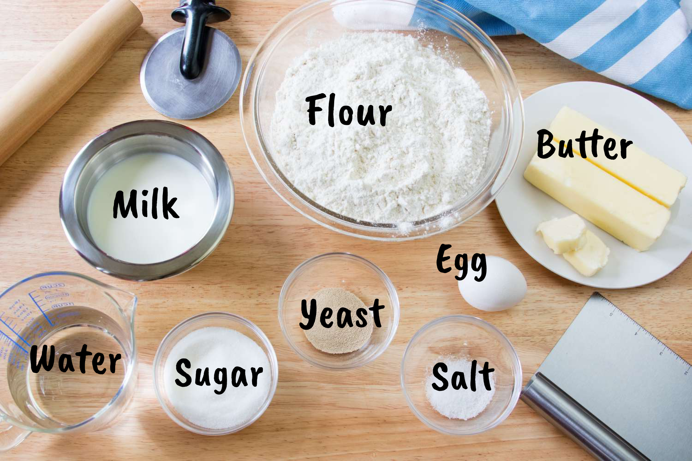

Croissants are part of the category of pastries that the French call Viennoiseries, a nod to their origins in Vienna.

Ah the croissant, the iconic French pastry... What if I am about to tell you that history of the croissant suggests that it may not be French at all!? In this article, I dive into the history, the facts and myths about the croissant.
🥐 Austrian origins
They aren't really French Shocking, I know! These delicious pastries
are said to have been invented in Vienna, Austria. Once upon a time in
1683 Vienna, Austria the Turkish tried to invade Vienna during a big
battle siege over the city. Failing each time they decided to dig an
underground tunnel, but Vienna’s bakers, who worked in the basement
storerooms, heard the digging and alerted the army. The Turkish invaders
didn’t succeed and the bakers of Vienna were given high honors for saving
the city. Bakers made pastry in the shape of a crescent moon, that is the
symbol of the Ottoman Empire (also known as the Turkish Empire), to
celebrate this victory.

🥐 A Viennese bakery in Paris
August Zang, an Austrian artillery officer, is credited with bringing the croissant
to France he opened a Viennese bakery at 92, Rue du Richelieu in Paris. It
served Viennese specialties including kipferl (the German word for
crescent) and the Vienna loaf. This bakery inspired imitators and the
French version of the kipferl was named after the shape given to it: a
crescent – the French word being croissant.

🥐 Viennoiseries
Croissants are part of the category of pastries that the French call
Viennoiseries, a nod to their origins in Vienna.
🥐 It may have Austrian origins but the French made it their own
Jim Chevallier, an independent scholar and author of the book “August Zang
and the French Croissant: How Viennoiserie Came to France” says that while
the croissant may have had Austrian origins, the French made it their own:
“The croissant began as the Austrian kipferl but became French the moment
people began to make it with puffed pastry, which is a French innovation.”
And: “It has fully taken root in its adopted land.” If you were to order a
kipferl in Austria today, you will most likely be given a cookie rather
than a pastry, with the only resemblance to the croissant being its
crescent shape.

🥐 Some say it was Marie Antoinette who brought the croissant to France… The Queen of the French Revolution is famously attributed for the phrase, “Let them eat cake”. But what she really said, when told that the population was in revolt because they had no bread, was, “Let them eat croissant”. 
🥐 A relatively recent recipe
The first known modern-day French croissant recipe wasn’t created
until the early 1900s.A croissant recipe showing the use of yeasted puff
pastry dough instead of brioche that was used previously first appeared in
1905 in the book Colombie’s “NOUVELLE ENCYCLOPEDIE CULINAIRE. Cuisine et
Pâtisserie Bourgeoises conserves de ménage.”The Croissant became the
French national product in 1920 and started as a luxury product, but by
the end of the nineteenth century, it was middle-class (the rich preferred
a good brioche).

🥐 Why some croissants are curved and others are straight?
Croissants that are straight are those made with butter (croissants
au beurre) and the curved ones are made with margarine (croissants
ordinaires).

🥐 Lamination
Croissants are typically made by folding butter into dough, rolling
the dough into sheets, and then continuing the folding and rolling process
known as ‘lamination’, before cutting and rolling into a crescent shape
and baking in an oven.

🥐 How many layers are there in a croissant?
Different bakers make their croissants with a different number of folds
and turns. But most fold their croissant dough into thirds at each turn
before spreading it with a roller and folding it again into thirds for a
total of 3 or 4 turns. So if a baker folds his dough 3 times each turn for
a total of 3 turns, the resulting croissant dough will have 27 layers
while 4 turns results in a croissant dough with 81 layers. After the
laminating process, bakers cut the croissant dough into triangles and roll
the dough into their famous crescent shape, increasing the number of
layers in the croissant by two for each roll. Most recipes recommend 3 or
4 rolls. Laminated dough with 81 layers, rolled 4 times, will result in a
croissant with 649 layers. Mind blowing, isn’t it?

🥐 Ingredients
There are only 8 ingredients in a French croissant
recipe. The basic ingredients for a classic French croissant au beurre
are: 1) butter, 2) flour, 3) water, 4) milk, 5) yeast, 6) sugar 7) salt
and 8) egg.

🥐 Cronut
A cross between a croissant and a doughnut?
The cronut is a recent
culinary trend in the U.S., and has already been trademarked.

🥐 Yakitate!!
“Yakitate!!” means, “freshly baked” in Japanese. And one of Japan’s most
popular Manga characters has to bake a croissant with 324 layers of dough.
Check this out 324-Layer Croissant Ja-pan
A croissant should be golden brown, crispy and flaky on the outside with visible layers. The interior should be soft and airy with honeycomb air pockets. It should taste rich and slightly buttery but should not be too greasy just as you will get them in our Cafe Brunch restaurants. Now there is only one thing waiting for you... delishh croissants to try!